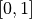
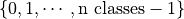
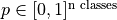

Tutorial 2.a: Representing and Evaluating Uncertainty for Classification
The structure of this tutorial will mirror that of Tutorial 1.a. Tutorial 1.a focuses on regression problems, while the current tutorial focuses on classification problems.
Before we start to work with any predictions, we must first think about how to represent our prediction. For example, when predicting image classes, we can represent the prediction as a categorical distribution over all possible labels, or as a set of likely labels. Each representation has its pros and cons. Depending on the different requirements during training/deployment, we may even want to convert between different representations.
This notebook aims to introduce some popular representations, as well as metrics to measure the quality of the predictions.
We first list the types of predictions currently supported by torchuq for classification. You can skip this part and come back later as a reference.
Name |
Variable type/shape |
Special requirement |
torchuq sub-modu le for evaluati on |
|---|---|---|---|
Topk |
``int array [batch_siz e] or [batch_size, k]` ` |
Each
element
take values
in
|
``torchu q.evalua te.topk` ` |
Categorical |
|
Elements should be in  and sum to |
|
USet |
|
Elements are 0 or 1 |
``torchu q.evalua te.uset` ` |
Ensemble |
|
name must start with prediction type and a string (with no special characters) , such as ‘categorica l_1’ |
Unavaila ble |
# We must first import the dependencies, and make sure that the torchuq package is in PYTHONPATH
# If you are running this notebook in the original directory as in the repo, then the following statement should work
import sys
sys.path.append('../..') # Include the directory that contains the torchuq package
import torch
from matplotlib import pyplot as plt
As a running example, we will use existing predictions for CIFAR-10. We first load these predictions.
reader = torch.load('pretrained/resnet18-cifar10.pt')
# These functions transform categorical predictions into different types of predictions
# We will discuss transformations later, but for now we will simply use it to generate our example predictions
from torchuq.transform.direct import *
predictions_categorical = reader['categorical']
predictions_uset = categorical_to_uset(reader['categorical'])
predictions_top1 = categorical_to_topk(reader['categorical'], 1)
predictions_top3 = categorical_to_topk(reader['categorical'], 3)
labels = reader['labels']
1. Top-k Prediction
The simplest type of prediction specifies the top-k labels (i.e. the k
most likely predicted labels). The labels are represented as integers
. A batch of
top-k prediction is represented by an integer array of shape
[batch_size, k], where predictions[i, :] is a sequence of labels
(which are represented as integers). A top-1 prediction can be either
represented as an array of shape [batch_size, 1] or more
conveniently as an array of shape [batch_size].
Here, we first verify that the loaded top3 and top1 predictions have the correct shape.
print(predictions_top1.shape)
print(predictions_top3.shape)
torch.Size([10000])
torch.Size([10000, 3])
A very natural way to visualize the quality of a top-1 prediction is by
the confusion matrix: among the samples that are predicted as class
 , how many of them actually belong to class
, how many of them actually belong to class  . To plot
a confusion matrix in torchuq use
. To plot
a confusion matrix in torchuq use
torchuq.evaluate.topk.plot_confusion_matrix.
from torchuq.evaluate import topk
topk.plot_confusion_matrix(predictions_top1, labels);
We can also evaluate metrics for these predictions, such as accuracy
print(topk.compute_accuracy(predictions_top1, labels))
print(topk.compute_accuracy(predictions_top3, labels))
tensor(0.9524)
tensor(0.9951)
2. Categorical Prediction
The categorical prediction is perhaps the most useful prediction type
for classification. This type of prediction returns the probability that
a label is correct for each possible label. In torchuq a categorical
prediction is represented as a float array of shape
[batch_size, n_classes], where predictions[i, j] is the
probability that the -th sample takes the -th label.
print(predictions_categorical.shape)
torch.Size([10000, 10])
Confidence Calibration. Given a categorical prediction
, the confidence of the
prediction is the largest probability in the array: .
If this largest probability is close to 1, then the prediction is highly
confident. A simple but important requirement for this type of
prediction is confidence calibration: among the samples with confidence
 , the top-1 accuracy should also be . For instance, if
a model is 90% confident in each of 100 predictions, it should predict
the correct label for 90 of the samples. If this property doesn’t hold,
then these confidence estimates are not meaningful.
, the top-1 accuracy should also be . For instance, if
a model is 90% confident in each of 100 predictions, it should predict
the correct label for 90 of the samples. If this property doesn’t hold,
then these confidence estimates are not meaningful.
We can visualize confidence calibration by plotting the reliability
diagram, which plots the (actual) accuracy  among samples with
predicted confidence vs. the predicted confidence .
Ideally the predicted confidence will be equal to the actual
accuracy , so a perfectly calibrated model will yield a
diagonal line. Deviations from this line represent
miscalibration. As an example, we plot the reliability diagram for our
example predictions below, and it is clear that the predictions are not
well-calibrated. For example, among all samples with a confidence of
about 0.9, the accuracy is only about 0.8. Hence the accuracy is lower
than the confidence, and the predictions are over-confident.
among samples with
predicted confidence vs. the predicted confidence .
Ideally the predicted confidence will be equal to the actual
accuracy , so a perfectly calibrated model will yield a
diagonal line. Deviations from this line represent
miscalibration. As an example, we plot the reliability diagram for our
example predictions below, and it is clear that the predictions are not
well-calibrated. For example, among all samples with a confidence of
about 0.9, the accuracy is only about 0.8. Hence the accuracy is lower
than the confidence, and the predictions are over-confident.
We can also compute the expected calibration error (ECE), which is a single number that measures mis-calibration. The ECE measures the average deviation from the ideal line. In practice, the ECE is approximated by binning — partitioning the predicted confidences into bins, and then taking a weighted average of the difference between the accuracy and average confidence for each bin. Pictorially, it is the average distance between the blue bars and the diagonal in the reliability diagram below.
from torchuq.evaluate import categorical
categorical.plot_reliability_diagram(predictions_categorical, labels, binning='uniform');
print('ECE-error is %.4f' % categorical.compute_ece(predictions_categorical, labels, num_bins=15))
ECE-error is 0.0277
3. Uncertainty Set Prediction
The next type of representation is (uncertainty) set predictions.
Uncertainty sets are almost the same as top-k; the main difference is
that for top-k predictions, k must be specificed a priori, while for
uncertainty sets, k can be different for each sample. In torchuq,
uncertainty set predictions are represented by an integer array of shape
[batch_size, n_classes], where predictions[i, j] = 1 indicates
that the -th sample includes the -th label in its
uncertainty set, and predictions[i, j] = 0 indicates that it is not.
For set predictions, there are two important properties to consider:
The coverage: the frequency with which the true label belongs to the predicted set. A high coverage means that the true label almost always belong to the predicted set.
The set size: the number of elements in the prediction set
Ideally, we would like high coverage with a small set size. We compute the coverage and the set size of the example predictions below.
from torchuq.evaluate import uset
coverage = uset.compute_coverage(predictions_uset, labels)
size = uset.compute_size(predictions_uset)
print("The coverage is %.3f, average set size is %.3f" % (coverage, size))
The coverage is 0.987, average set size is 1.268